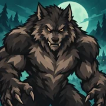

01
01GECE SENİN.
KÖY KİMİN?
KÖY KİMİN?

GİZLİ ROL · SOSYAL ÇIKARIM
WEREWOLF MASTER
Köy uyuduğunda kurtlar avlanır. Gündüz olduğunda herkes masumdur. Rolünü sakla, ipuçlarını birleştir ve köydeki kurtları ortaya çıkar.
10 BİN+GOOGLE PLAY / İNDİRMEGOOGLE PLAY'DEN İNDİR ↗Gizlilik politikası